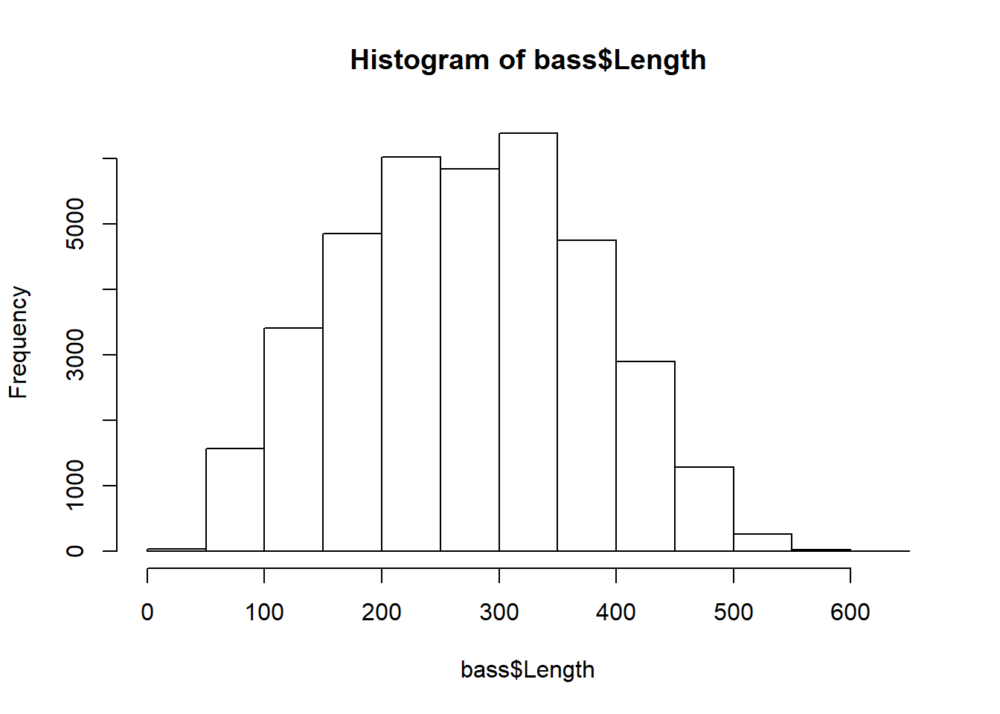
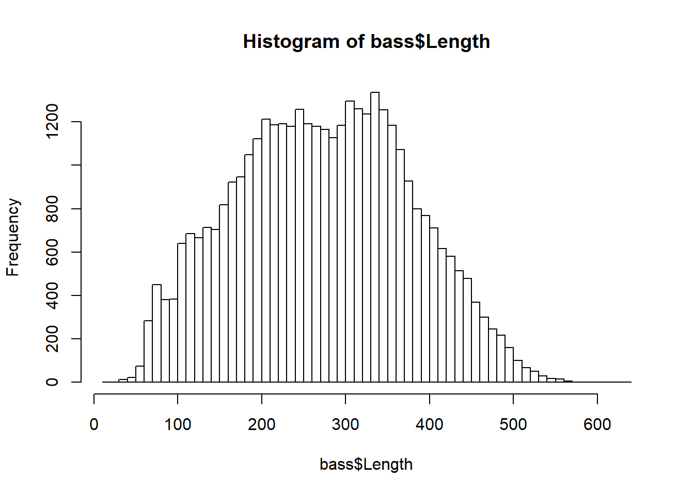
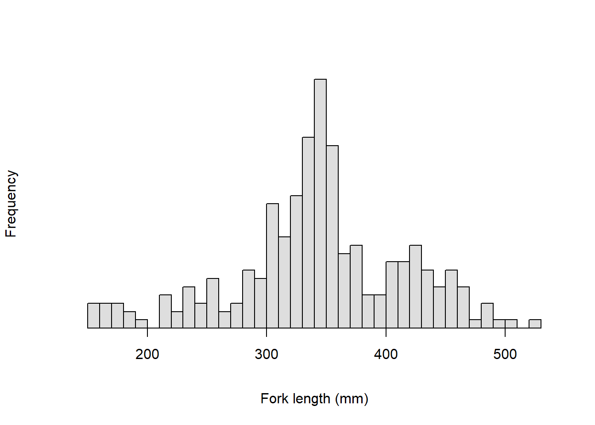
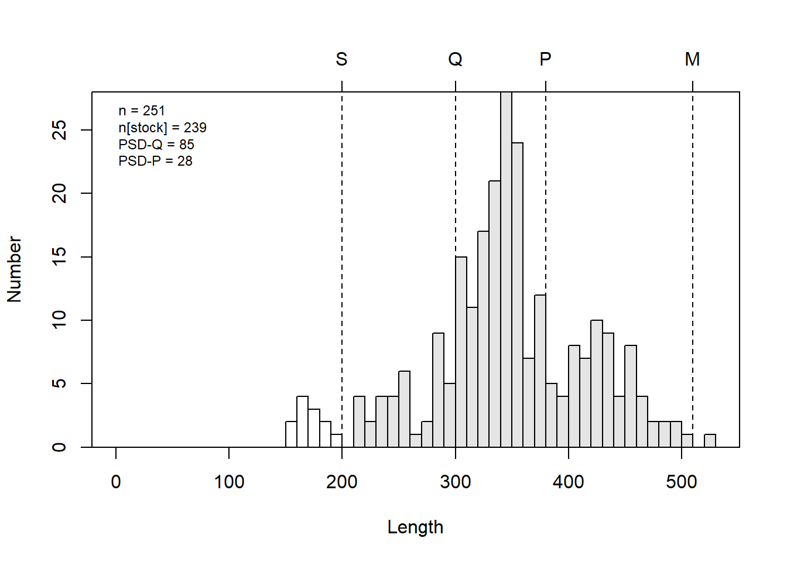
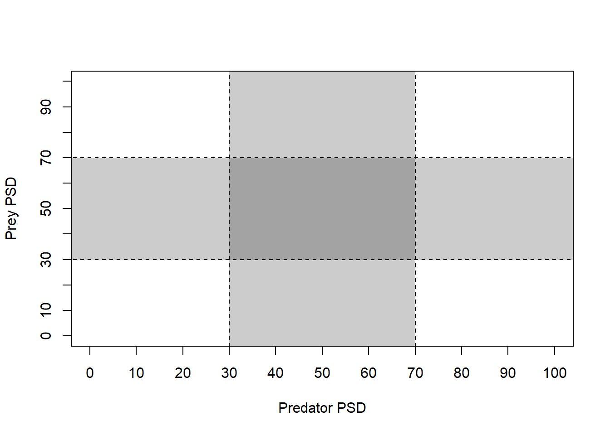
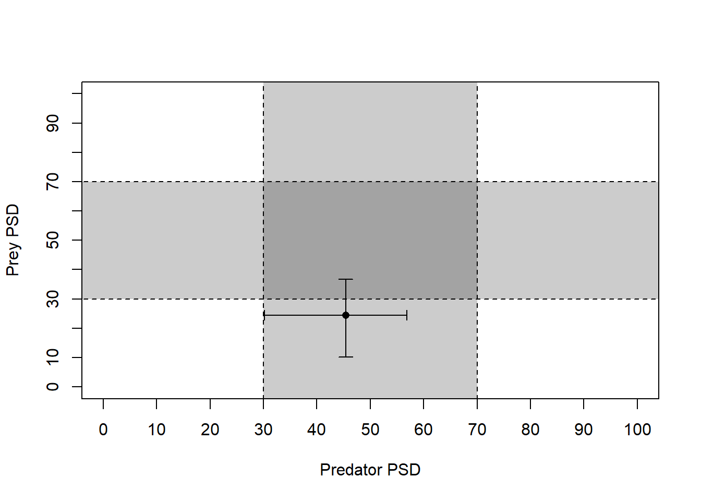
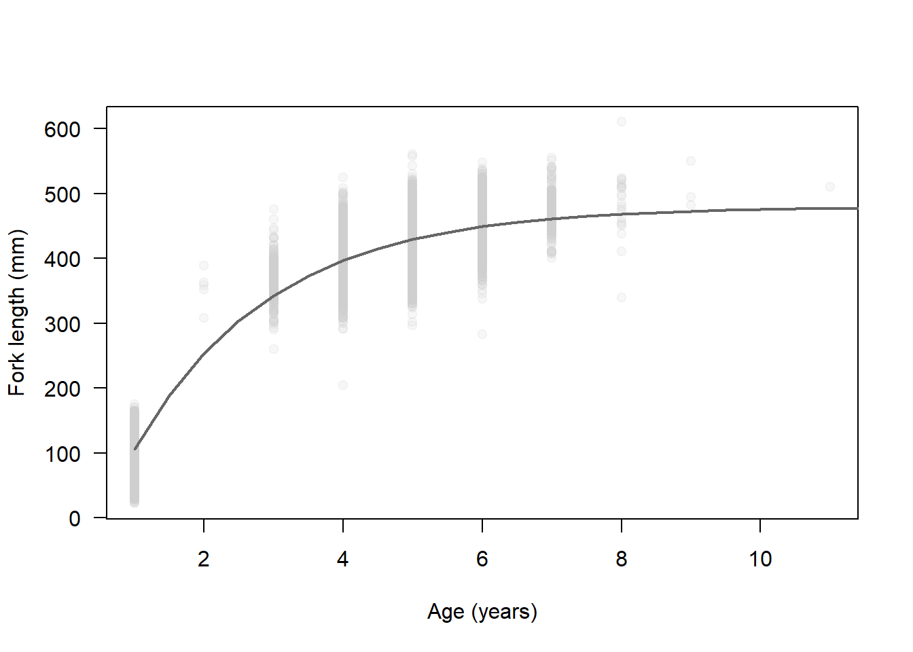

Now that we have looked at some of the basic programming and common statistical tools in R, we can dive into some of the tools that have been created just for fish! There are a few packages for dealing with data from fish and fisheries, and we will just glance off the tip of the iceberg here to demonstrate some of the that we use all of the time.
Let’s start by reading in some data for Largemouth Bass in New York so we can look at length-frequency histograms in R. We will walk through some basic steps that you should do pretty much everytime you start working with a new dataset- even if you are the one who collected and entered the data. The reason for this is that we always want to know how R is treating our data.
# Read in the data file
bass = read.csv('lmblw.csv', stringsAsFactors = FALSE)
# Have a quick look at the first ten lines of the data
head(bass, 10)
Name Length Date Water Weight
1 Largemouth Bass 17 6/20/1991 0:00 Grant Pond 1
2 Largemouth Bass 28 6/18/2008 0:00 Lamoka Lake 0
3 Largemouth Bass 31 6/20/1991 0:00 Grant Pond 1
4 Largemouth Bass 31 6/20/1991 0:00 Grant Pond 1
5 Largemouth Bass 34 6/18/2008 0:00 Lamoka Lake 0
6 Largemouth Bass 35 6/24/1991 0:00 Massapequa Reservoir 1
7 Largemouth Bass 37 6/20/1991 0:00 Grant Pond 1
8 Largemouth Bass 37 6/27/1991 0:00 Massapequa Reservoir 1
9 Largemouth Bass 37 6/27/1991 0:00 Massapequa Reservoir 1
10 Largemouth Bass 38 8/26/1992 0:00 Lake Abanakee 1
# Take a quick look at the data structure
str(bass)
'data.frame': 37354 obs. of 5 variables:
$ Name : chr "Largemouth Bass" "Largemouth Bass" "Largemouth Bass" "Largemouth Bass" ...
$ Length: int 17 28 31 31 34 35 37 37 37 38 ...
$ Date : chr "6/20/1991 0:00" "6/18/2008 0:00" "6/20/1991 0:00" "6/20/1991 0:00" ...
$ Water : chr "Grant Pond" "Lamoka Lake" "Grant Pond" "Grant Pond" ...
$ Weight: int 1 0 1 1 0 1 1 1 1 1 ...We can even look at it like a spreadsheet!
Now, let’s make a basic l-f histogram of the bass data

This is pretty ugly, and it doesn’t do a whole lot for us in terms of biological meaning. We can modify this plot to use standard breaks or bins so that we can get, for example, 10-mm length bins that may have more biological meaning.
# Make a histogram with all of the arguments set to their defaults
hist(x = bass$Length,
breaks = diff(range(bass$Length))/10
)
Here, we told R to calculate the difference (diff) between the upper and lower values returned from the function range. Then, we divide that difference (250 mm) by 10 to get 25 10-mm length bins.
Okay, so this plot is better, but there is still a lot of ugly crap going on here. For one, the labels make no sense. The axes don’t cross at zero, we have no color, and we have an ugly main heading in our figure that we will virtually never use for papers. On top of that, we are working with bass from 320 lakes and reservoirs.
So, let’s fix it!!
Start by picking out a lake to work with. I am going to work with Saratoga Lake here because I know you have worked with data from that lake, and it is right up the road from my hometown. To get an alphabetical list of lakes in the data set, you can type sort(unique(bass$Water)) in the console.
Once you have your lake picked out, we need to subset our data:
# Get the data for the lake you want to use
# Notice the comma inside the brackets here!!
mybass = bass[bass$Water == 'Saratoga Lake', ]Make sure you have enough data for this to work
Now, let’s make a better looking histogram.
# Make a histogram with 10-mm length
# bins that looks much better than the
# previous one if only because it's gray.
hist(x = mybass$Length,
breaks = diff(range(mybass$Length))/10,
yaxt = 'n', # Don't print y-axis yet
xaxt = 'n', # Don't print x-axis yet
col = 'gray87',
main = '',
xlab = 'Fork length (mm)'
)
axis(side = 1, pos = 0)
axis(side = 2, pos = min(bass$Length), las = 2)
There, that looks a lot better. We might even think about putting this in a report or an article.
If you want to get really crazy, you can start plotting males and females in different shades of gray, we could add lines and text to the plot to indicate means of each distribution, we can add legends, and indicate areas of overlap using transparent RGB color encoding:
FSA packageSo, we can make some pretty nice figures by hand, but this can be a lot to learn and not everyone is into it. If we want a faser solution, there are a number of packages that are maintained in R specifically for fish data. The most comprehensive toolsets is are FSA and the fishmethods packages. Here we will start to play with some of the tools in FSA, with examples from the package documentation, to see how some of the more common fish population assessment tools work.
The FSA package contains a lot of really cool tools that make life a lot easier. And, you can even get an introductory fish stats book that goes along with it. We will cover some basic applications here, but realize that this package can be used for a whole lot of other stuff, and now includes much of what previously was housed exclusively in the fishmethods package.
For example, if we wanted to create a length-frequency histogram that shows some of the Gabelhouse length categories, we could do it like this:
# Make an l-f histogram that includes Gabelhouse lengths
psdPlot(~Length, # Tell R the name of your length data
data=mybass, # Tell it the name of the data frame
species="Largemouth Bass", # Pass species
w=10) # Tell R how wide length-bins are
This is a heck of a lot easier than going through all of that other stuff if what we want is an l-f histogram with all of this stuff on it. But, if that’s not what you want then you have to do it by hand or customize the code from FSA, so it’s good to know both.
The plots we used above are neat, but if what we are really after are the numbers or a tic-tac-toe graph for multiple species, then this is only going to give us part of what we want. Luckily, there are other tools for that stuff in the FSA package.
We will demonstrate PSD calculations in R using the FSA package here. Note that these functions are for convenience only, and you could do it by hand in R if you were inclined…ha!
# Calculate PSD for Gabelhouse length categories
# and each of the intervals
psdCalc(~Length,
data=mybass,
species="Largemouth Bass",
digits=1)
Estimate 95% LCI 95% UCI
PSD-Q 84.5 78.0 91.1
PSD-P 28.0 19.9 36.2
PSD-M 0.4 0.0 1.6
PSD S-Q 15.5 8.9 22.0
PSD Q-P 56.5 47.5 65.5
PSD P-M 27.6 19.5 35.7
PSD M-T 0.4 0.0 1.6If you take a close look at the output, you can see that we not only get point estimates for each of the standard length categories we normally care about, but we also get 95% confidence intervals from those estimates! Very cool…how long do you think that would have taken you in Excel?
The psdCalc function is really great for getting PSD for one species, but we are often interested in PSDs of predator and prey simultaneously for gauging things like ‘balance’ in fish communities.
So, let’s pretend we have some predator-prey data for which we have already calculated psDs. If we want to make a tic-tac-toe graph, all we have to do is:
Let’s start by making up (er, simulating) data for predator PSD and prey SD with 95% Confidence intervals.
# Make up mean and 95% CI of PSD for each species
prey <- c(45.4, 30.2, 56.8)
pred <- c(24.5, 10.2, 36.7)
# Give names to the values in each of those objects
names(prey) <- names(pred) <- c("Estimate", "95% LCI", "95% UCI")
# Print predator and prey objects to see what they look like
prey
Estimate 95% LCI 95% UCI
45.4 30.2 56.8
pred
Estimate 95% LCI 95% UCI
24.5 10.2 36.7 Next, we will make a blank plotting window for our tic-tac-toe graph.
tictactoe(predobj = c(30, 70),
preyobj = c(30, 70),
predlab = "Predator PSD",
preylab = "Prey PSD", obj.col = "black",
obj.trans = 0.2,
bnd.col = "black",
bnd.lwd = 1,
bnd.lty = 2
)
Now, that gives us a really nice blank plot! What about the data?
Well, we can add the data on our tic-tac-toe graph, of course.
# Load the `plotrix` package for the
# `plotCI` function first. You may need
# to install this if it didn't automatically
# install with `FSA`
library(plotrix)
# Plot the PSD and the confidence intervals
plotCI(prey[1],pred[1],li=prey[2],ui=prey[3],
err="x",pch=16,add=TRUE)
plotCI(prey[1],pred[1],li=pred[2],ui=pred[3],
err="y",pch=16,add=TRUE)
Beautiful…
Individual growth, based on length-at-age data can be really useful information when we are developing stock assessments on which we will eventually base fishery management decisions. There are a number of different tools that we can use to estimate growth curves.
The most common kind of growth curve for length-at-age data is the von Bertalanffy growth model, but there are a whole bunch of others that may be way better depending on the biology of the fish you are studying. We can estimate this model using either individual length-at-age data, or by using population averages. If we have the data, the former is preferred.
Let’s look at an example of how to do this. There are a couple of different ways we can go about this. All of them require that we pick some kind of growth model, and that we provide starting values for the parameters in that model. The parameters are quantities that govern the shape of the growth curve, and that we (usually) need to estimate from the data.
I know, sounds confusing, but the math is actually more straightforward than the funny polynomial lines you may have fit to length-age data in Excel.
Let’s start by reading in a new data set. This one has American shad Alosa sapidissima lengths and ages in the Susquehanna River. We have around 10,000 paired fork lengths and otolith ages. Side note: these are real data that we are working with right now for the 2020 ASMFC stock assessment for the species.
Next, we need to define the von Bertalanffy growth model as an object so R can see it. Important: I am using FL and Age below because those are the names of the columns in my data that hold length and age data. You will need to change that if you have different names!
Now, we can pass this on to a non-linear optimizer, just like you might do in Excel. But first, we need to come up with some starting values. Without any prior knowledge of the study population this can be tough. But, we can get some starting values for our parameters (Linf, K, and t0) using the FSA package.
# Get starting values for each of your
# parameters using the `vbStarts` function
# from `FSA`
starts = vbStarts(formula=FL~Age, data=shad)Now, we have a list of starting values that we can use to start estimating the growth function.
# Have a look at the starting values for
# the parameters.
starts
$Linf
[1] 473.1499
$K
[1] 0.8690361
$t0
[1] 0.7090241With these in hand, we can finally estimate the parameters for the von Bertalanffy growth function for these fishies:
# Fit the von Bertalanffy growth function using
# nonlinear least squares (nls) optimization
mymod = nls(vbmod, data = shad, start = starts)And, at long last we can have a look at the parameter estimates like this:
# Show model summary
summary(mymod)
Formula: FL ~ Linf * (1 - exp(-K * (Age - t0)))
Parameters:
Estimate Std. Error t value Pr(>|t|)
Linf 4.793e+02 1.864e+00 257.08 <2e-16 ***
K 5.023e-01 7.587e-03 66.20 <2e-16 ***
t0 5.030e-01 6.020e-03 83.56 <2e-16 ***
---
Signif. codes: 0 '***' 0.001 '**' 0.01 '*' 0.05 '.' 0.1 ' ' 1
Residual standard error: 30.23 on 10328 degrees of freedom
Number of iterations to convergence: 4
Achieved convergence tolerance: 1.065e-06If we make a new sequence of ages, we can even predict mean length at age:
# New sequence of ages with tiny steps
# to make the line look smooth
newage <- seq(1, 13, .5)
# Get parameters
params = summary(mymod)$coefficients
# Predict mean length at age:
pred = params[1,1]*(1-exp(-params[2,1]*(newage-params[3,1])))And finally, we can plot this against the raw data:
# Plot the raw data
plot(shad$Age,
shad$FL,
pch=21,
bg=rgb(0.8, 0.8, 0.8, 0.15),
col=rgb(0.8, 0.8, 0.8, 0.15),
xlab = 'Age (years)',
ylab = 'Fork length (mm)',
yaxt='n'
)
axis(2, las=2)
# Add the mean length at age predictions
lines(x=newage, y=pred, lty=1, lwd=2, col='gray40')
Okay, if that’s not all we have time for we can poke around with some other stuff when we meet. But, this should at least demystify a little bit of R for you, and hopefully it gives you the chance to get into some of this on your own. When in doubt, remember that good information is still available in those paper objects called books, but Google is really your BFF when it comes to getting help with R.
This work is licensed under a Creative Commons Attribution 4.0 International License. Data are provided for educational purposes only unless otherwise noted.